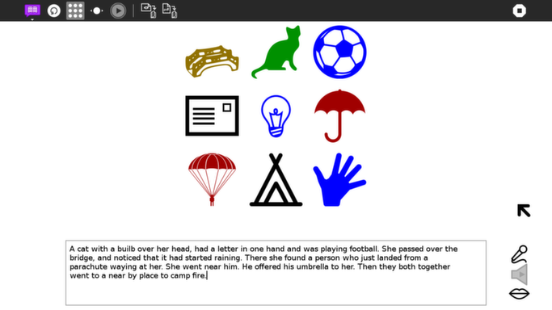
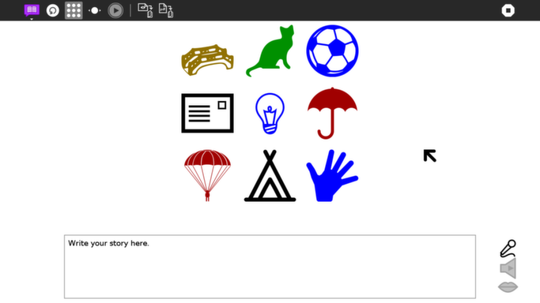
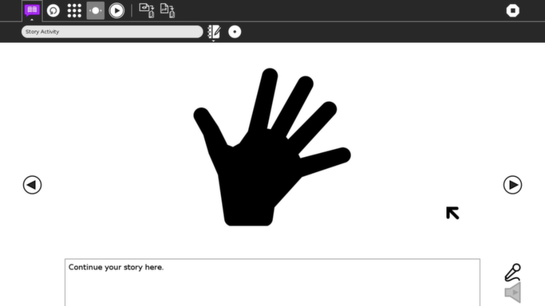

Story¶
About¶
The Story Activity uses images to prompt a learner to tell a story.

Where to get Story¶
The Story activity is available for download from the Sugar Activity Library: Story
The source code is available on GitHub.
Using Story¶
The learner should try to tell a story that ties the images together into a comprehensive narrative.
Toolbar¶
(From left to right)
Activity-toolbar Button: Opens standard Sugar activity toolbar
Reload-images Button: loads nine new images
View all images at once Button

View images one at a time Button

Playback Button: playback audio recording
Save as image
Save as PDF
(From top to bottom)
Record input from microphone
Play the recording
Speak the story (text to speech)
Learning with Story¶
Story is a fun way to get children to engage in narration. Simply generate some images and let the children’s imagination do the rest.
Extending Story¶
Ask the students to transcribe and refine their stories using the Sugar Write activity. (They can save to the Journal the images used to prompt their story and then embed this image into their Write document.)
A spoken story (or notes) can be recorded to the Journal.
Story can be shared, so the narration can be created amongst multiple students. They can chain together a story by taking turns; each turn involving generating narration for one image.
Modifying Story¶
Add new images to Story by putting them in the images folder of the activity.
Story can use the images from Art4Apps project if installed.
Where to report problems¶
Please report bugs and make feature requests at story/issues.
Credits¶
Story was written and is maintained by Walter, Ignacio_Rodríguez. He was inspired in part by Claudia Urrea.
Most of the images are from the The Noun Project.